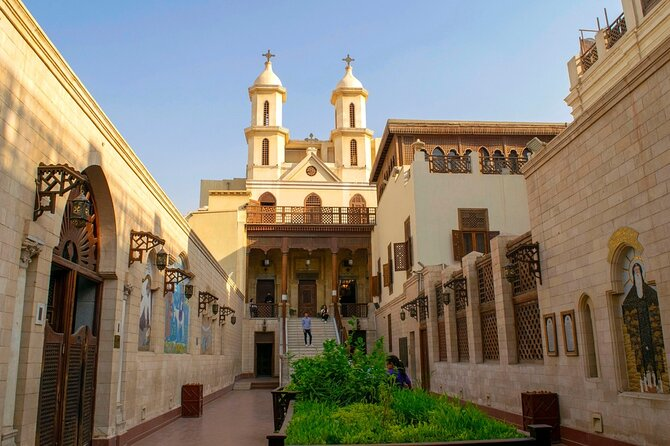

.avif)


-
Pyramids of Giza

These ancient wonders are one of the most iconic landmarks in the world. The Great Pyramid of Giza is the oldest and largest of the three pyramids, and visitors can also see the Sphinx nearby. Marvel at the awe-inspiring architecture of the Pyramids of Giza and take a camel ride around the iconic structures. Venture inside the Great Pyramid to explore its mysterious chambers and intricate passageways for an unforgettable adventure.
-
Egyptian Museum

Located in Tahrir Square, the Egyptian Museum houses a vast collection of artifacts, including treasures from Tutankhamun's tomb, mummies, and ancient Egyptian art. Embark on a journey through time as you explore the vast collection of artifacts at the Egyptian Museum. Don't miss the chance to attend a guided tour or lecture to gain deeper insights into Egypt's fascinating history and archaeology.
-
Saladin Citadel

Situated proudly atop the Mokattam Hills, the Saladin Citadel stands as a testament to Cairo's rich history and resilience. Built by the legendary Muslim leader Saladin in the 12th century, this formidable fortress offers visitors a captivating journey through time. You will discover its fascinating military history and architectural wonders. Also visit the Mosque of Muhammad Ali to admire its stunning Ottoman-era design and panoramic vistas of Cairo.
-
Muizz Street

Known as one of the oldest streets in Cairo, Al-Muizz Street is lined with historic buildings, mosques, and medieval gateways. It's a great place to take a walk and admire the stunning architecture. You can also visit workshops and studios where skilled craftsmen and women practice traditional crafts such as pottery, woodworking, and metalworking, and even try your hand at creating your own masterpiece.
-
Hanging Church
This historic church, also known as Al-Muallaqa, is one of the oldest and most iconic Coptic churches in Egypt. Its significance lies not only in its age but also in its architectural beauty and religious importance. The church is renowned for its exquisite Coptic artwork, including intricate wood carvings, vibrant icons, and ancient frescoes depicting biblical scenes and saints.
-
Nile River Cruise

Experience Cairo from the water by taking a dinner cruise along the Nile River. Enjoy traditional Egyptian cuisine, live music, and breathtaking views of the city skyline and illuminated landmarks.
Book here -
Khan El Khalili Bazaar

This historic market is a labyrinth of narrow streets filled with shops selling traditional crafts, spices, jewelry, and souvenirs. It's a vibrant place to experience Cairo's culture and haggle for unique items. Dive into the bustling atmosphere of Khan El Khalili Bazaar and practice your bargaining skills as you shop for souvenirs, spices, and traditional handicrafts. Indulge in the flavors of Egyptian street food and sip on aromatic tea at one of the charming cafes lining the streets.
Places to visit in cairo
A must-visit places to experiencing the best of Cairo
Merna Iskander
Date: March 15, 2024